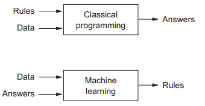
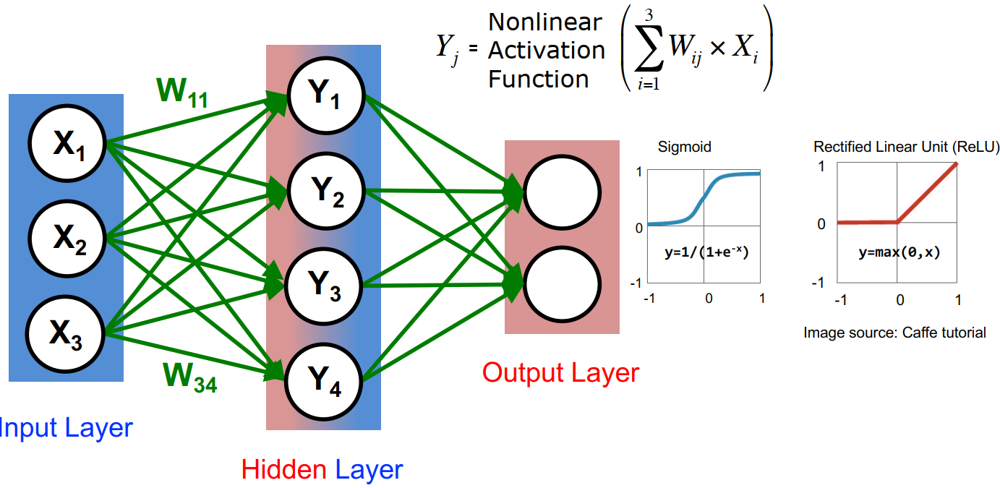
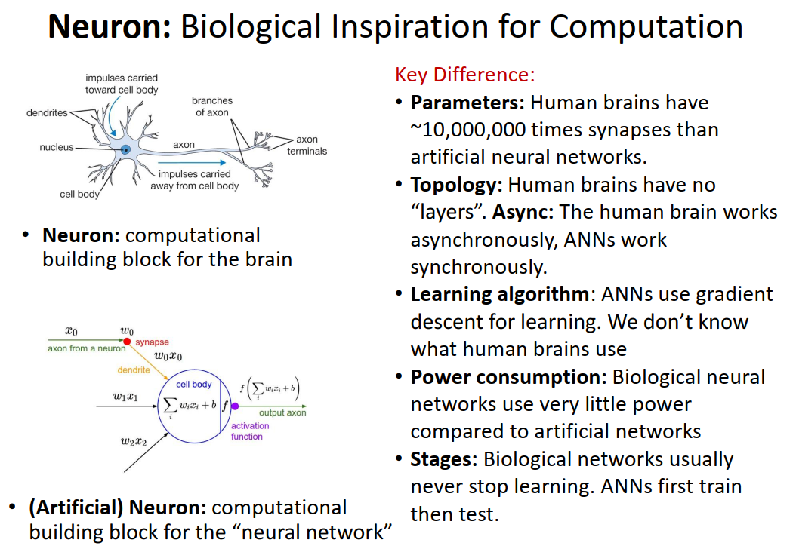
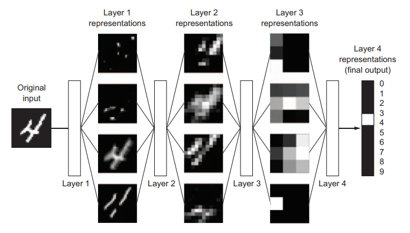
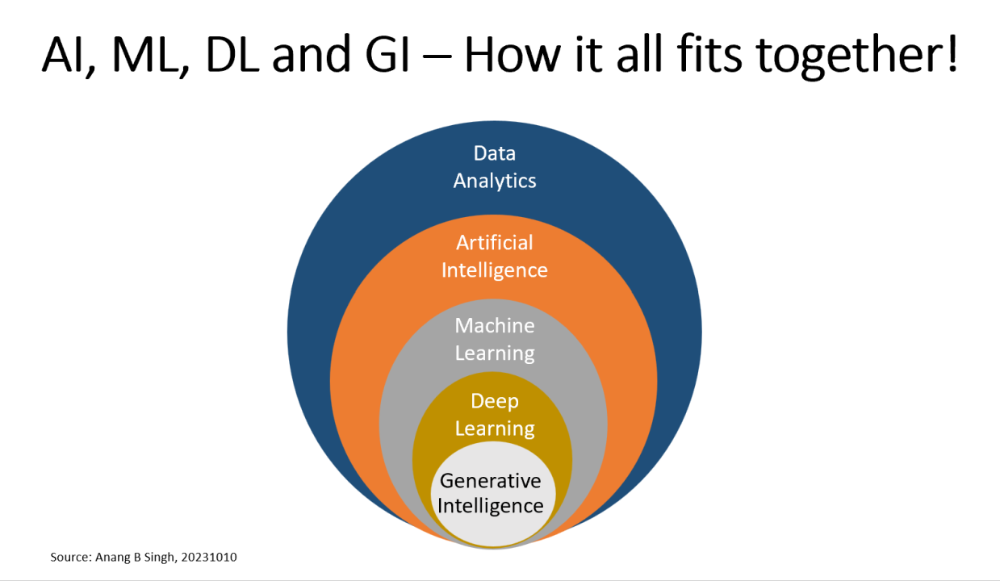
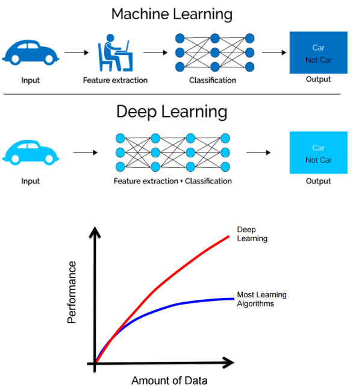
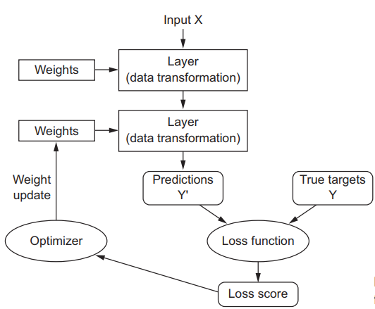

1. Giới thiệu về học sâu#
1.1. Giới thiệu#
Thuật ngữ Artificial Intelligence được tạo ra từ những năm 1950s với mục tiêu tự động hóa các công việc mà con người phải thực hiện. Thời điểm đó, các kỹ sư viết ra các thuật toán dựa trên các quy tắc (rule based) để hướng dẫn máy tính chơi cờ với con người. Việc sử dụng AI với các rule cho trước như vậy được gọi là symbolic AI
Khác với symbolic AI, Machine Learning được đưa ra để trả lời câu hỏi: "Liệu máy móc có thể tự đưa ra các quy tắc (rules) hay không?". Hai cách tiếp cận trên khác nhau cơ bản như hình dưới đây.

Từ 1960s đến giờ, có rất nhiều các các thuận toán khác nhau như SVM với kernel hay các thuật toán họ cây như Random Forest hay XGBoost. Các nhóm thuật toán này đều thực hiện rất tốt với các loại dữ liệu biến thiên ít thuần nhất với đặc thù có nhiều kiểu dữ liệu và biên độ biến thiên dữ liệu lớn. Ví dụ - dữ liệu khách hàng có thể có:
income- thu nhập từ 100 đến 1M USDtransaction- giao dịch có thể từ 1-10K USDage- độ tuổi trong khoảng 18-90
Với các nhóm dữ liệu này, các thuật toán họ cây đem lại kết quả rất tốt.
Tuy nhiên, bên cạnh các kiểu dữ liệu có cấu trúc, các nguồn dữ liệu phi cấu trúc như text, voice, image, video ngày càng phát triển càng nhiều. Với các nhóm dữ liệu này, sự phát triển của các thuật toán deep learning đem lại các kết quả vượt trội.
Học sâu (deep learning) là một lĩnh vực con của học máy (machine learning), trong đó các mô hình mạng neuron nhiều lớp (deep neural networks) được sử dụng để học từ dữ liệu. Khác với các thuật toán machine learning truyền thống, deep learning có khả năng tự động trích xuất các đặc trưng từ dữ liệu mà không cần sự can thiệp của con người.
Deep learning tạo sự khác biệt lớn so với các thuật toán ML thông thường bởi mô phỏng quá trình tương tác thông tin từ bộ não con người thông qua mạng neural. Dữ liệu đầu vào và đầu ra được gọi là input và output. Giữa 2 lớp này có nhiều lớp ẩn ở giữa (hidden layer) với nhiều node - đại diện cho 1 neural. Cấu trúc cơ bản của mạng neural như sau

Các input đầu vào tại mỗi neural sẽ tổng hợp và trả ra một kết quả làm đầu vào cho neural tiếp theo trong mạng thần kinh. Hàm tính toán tại mỗi neural gọi là hàm kích hoạt (activation function). Ở lớp cuối cùng, tùy theo bài toán cần thực hiện sẽ có số lượng neural khác nhau - ví dụ, bài toán phân loại đơn giản sẽ có 2 neural, bài toán phân loại nhiều nhóm - số neural chính là số nhóm, ...
So sánh giữa mạng neural của máy tính và con người có những khác biệt lớn như sau

Thuật toán deep learning có thể xử lý một lượng lớn dữ liệu và thực hiện tốt trong các nhiệm vụ phức tạp như nhận diện hình ảnh, xử lý ngôn ngữ tự nhiên... Chữ deep trong deep learning thể hiện nhiều lớp trong một mạng neural thần kinh. Nhờ vào cấu trúc mạng neuron sâu, deep learning có thể học được các biểu diễn dữ liệu rất phức tạp và trừu tượng, điều mà các thuật toán machine learning truyền thống khó đạt được như nhận diện ảnh, tạo ra phản hồi, ... Dữ liệu đầu vào và đầu ra của một lớp hoặc một neural được gọi là tensor (mảng dữ liệu đa chiều dữ liệu)

Từ deep learning, phát triển thêm nhóm thuật toán và mô hình với GenAI, cho phép thực hiện các tác vụ như tạo hình ảnh, âm thanh, text nhanh chóng và đạt chất lượng rất cao.
Mối quan hệ giữa Data Analytics, AI, ML, DL và GenAI như sau:

Deep Learning so sánh với các thuật toán ML khác

Một mạng neral network khi thực hiện sẽ qua các bước lớn:
Input X: Dữ liệu đầu vào cho mạng nơ-ron.
Layer (Data Transformation): Các tầng của mạng nơ-ron biến đổi dữ liệu qua các trọng số và hàm kích hoạt.
Predictions Y': Đầu ra dự đoán của mạng nơ-ron sau khi dữ liệu đã qua các tầng.
True Targets Y: Giá trị thực tế mà mạng nơ-ron cần dự đoán.
Loss Function: Hàm tính toán sự khác biệt giữa dự đoán (Y') và giá trị thực tế (Y).
Loss Score: Kết quả của hàm mất mát, thể hiện độ sai lệch của mô hình.
Optimizer: Bộ tối ưu hóa điều chỉnh trọng số dựa trên điểm mất mát để giảm sai lệch.
Weight Update: Quá trình cập nhật trọng số để cải thiện dự đoán của mô hình.

Mô hình deep learning có các ưu điểm vượt trội sau:
Cho phép động hóa
feature engineering, tối ưu hóa cùng lúc nhiều lớpCho phép kế thừa mô hình để sử dụng cho các bộ dữ liệu khác nhau (
transfered learning)
1.2. Mô hình cơ bản#
Ta xây dựng mô hình phân loại ảnh đơn giản với keras như sau.
Bước 1: Xây dựng dữ liệu train & test
from tensorflow.keras.datasets import mnist
(train_images, train_labels), (test_images, test_labels) = mnist.load_data()
train_images = train_images.reshape((60000, 28 * 28))
train_images = train_images.astype("float32") / 255
test_images = test_images.reshape((10000, 28 * 28))
test_images = test_images.astype("float32") / 255
Downloading data from https://storage.googleapis.com/tensorflow/tf-keras-datasets/mnist.npz
11490434/11490434 ━━━━━━━━━━━━━━━━━━━━ 1s 0us/step
Bước 2.1: Xây dựng cấu trúc mạng neural đơn giản với 2 layers:
Layer 1: 512 neural, và tất cả đều được liên kết vác node ở trước và sau
Layer 2: 10 neural - tương ứng với 10 giá trị cần phân loại từ 0-9, với activate function là
softmaxcó kết quả trong khoảng (0-1) để thể hiện xác suất.
from tensorflow import keras
from tensorflow.keras import layers
model = keras.Sequential([
layers.Dense(512, activation="relu"),
layers.Dense(10, activation="softmax")
])
Bước 2.2: Xác định thuật toán tối ưu hóa, hàm loss và chỉ số đánh giá mô hình.
# Xây dựng mô hình
model.compile(optimizer="rmsprop",
loss="sparse_categorical_crossentropy",
metrics=["accuracy"])
Bước 3: Xây dựng mô hình
model.fit(train_images, train_labels, epochs=5, batch_size=128)
Epoch 1/5
469/469 ━━━━━━━━━━━━━━━━━━━━ 5s 8ms/step - accuracy: 0.8747 - loss: 0.4368
Epoch 2/5
469/469 ━━━━━━━━━━━━━━━━━━━━ 4s 9ms/step - accuracy: 0.9652 - loss: 0.1171
Epoch 3/5
469/469 ━━━━━━━━━━━━━━━━━━━━ 4s 8ms/step - accuracy: 0.9791 - loss: 0.0716
Epoch 4/5
469/469 ━━━━━━━━━━━━━━━━━━━━ 4s 7ms/step - accuracy: 0.9851 - loss: 0.0513
Epoch 5/5
469/469 ━━━━━━━━━━━━━━━━━━━━ 5s 8ms/step - accuracy: 0.9890 - loss: 0.0385
<keras.src.callbacks.history.History at 0x29d35279410>
test_digits = test_images[0:10]
predictions = model.predict(test_digits)
predictions[0]
1/1 ━━━━━━━━━━━━━━━━━━━━ 0s 100ms/step
array([1.2894925e-08, 3.7221279e-09, 1.8397417e-06, 1.6939851e-04,
1.0917865e-12, 8.3619589e-08, 1.5530028e-12, 9.9982786e-01,
5.0504791e-08, 7.1067035e-07], dtype=float32)
# Kết quả
predictions[0].argmax()
np.int64(7)
# Dộ chính xác của mô hình
test_loss, test_acc = model.evaluate(test_images, test_labels)
print(f"test_acc: {test_acc}")
313/313 ━━━━━━━━━━━━━━━━━━━━ 1s 2ms/step - accuracy: 0.9743 - loss: 0.0836
test_acc: 0.9793999791145325
1.3. Tài liệu tham khảo#
Deep Learning with Python - chapter 1, 2